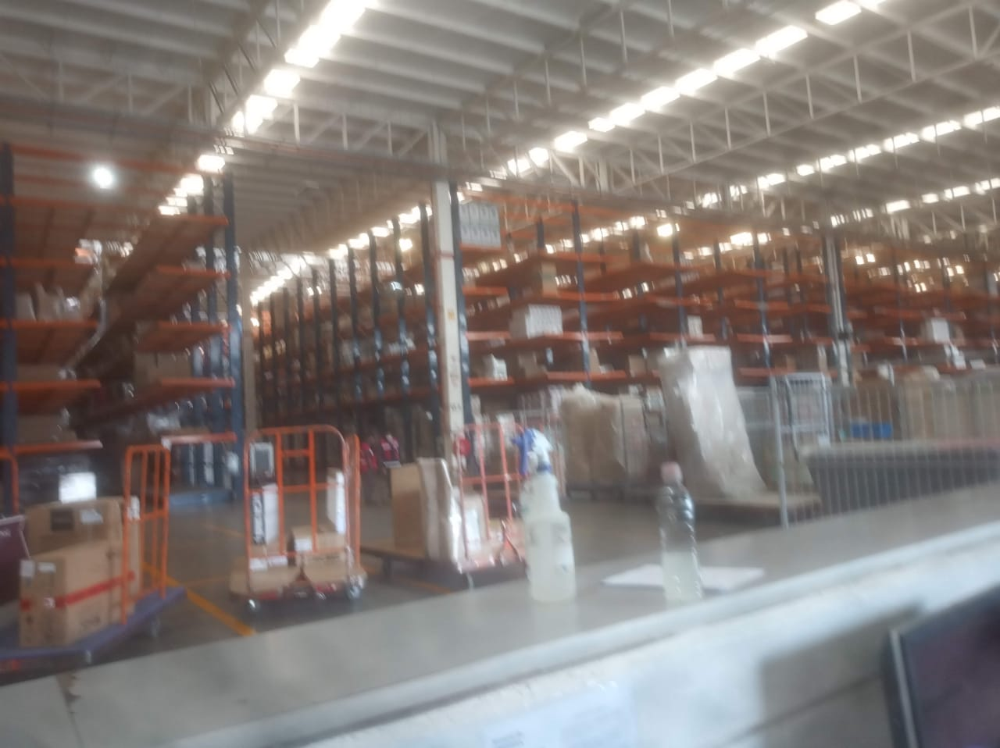

El sistema de almacenamiento consistente en la estantería cantiléver permite almacenar cargas largas y pesadas. En Huehuetoca se almacena la mercancía con la ayuda del montacargas pickup llevando del pulmón de recibo la mercancía a un lugar que deben buscar que este vacío. Al igual que para envíos deben buscar la mercancía en los pasillos y llevarla a los pulmones de envió. Se utiliza un sistema de etiquetas en el cual se identifica la ubicación de la mercancía para que este proceso sea mas eficaz es decir en estas etiquetas se identifica el pasillo donde recepción dejo acomodada la mercancía para que envíos pueda hacer su trabajo de manera rápida.
Considero que se podría eficientar este proceso
Diseñar un sistema de cantiléver manipulado desde una computadora.
Este sistema se estructuraría al igual que el antecesor con un sistema de etiquetas que indiquen la posición de la mecánica en una sección del cantiléver.
El diseño consistiría en montar en cada nivel del cantiléver una banda trasportadora en forma de pista, la cual reciba instrucciones de que secciones del cantiléver colocar en la parte delantera esta información será la que se le pase al liberar una fase lo visualizo como un proceso autónomo. Acompañada esta parte delantera con una pantalla con un código de colores en la que se muestre al montacarguista la información de quien debe recoger la mercancía, a donde la debe llevar e información de validación sobre la mercancía número de piezas y tipo de mercancía.
Esta banda y sistema esta pensada para la parte de envíos, en la parte de recepción visualizo un sistema de jaulas en las que la mercancía es dejada a nivel piso dentro de una jaula, esta es acomodada y registrada en la banda del cantiléver en una sección vacía de manera automática. Para que esto sea posible será necesario la instalación de un sistema que indique la presencia o ausencia de mercancía en cada sección del cantiléver. De esta manera los montacargas conozcan donde pueden ir colocando la mercancía, al igual que en envíos se colocaría una pantalla indicando el número de espacios vacíos para colocar la mercancía.
Considero el proceso se automatizaría acción que agilizaría la operación
Buscar la manera de conectar la creación de fases con el sistema de movilidad de surtido, así como aprovechar la información que se podría generar este proceso para el departamento de inventarios. Ejemplo identificar de acuerdo a esta información la rotación de los productos y el tiempo de almacenaje por sección en el cantiléver.